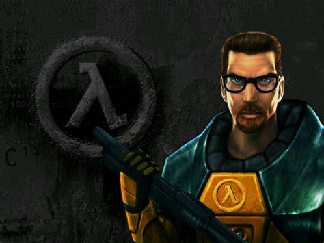
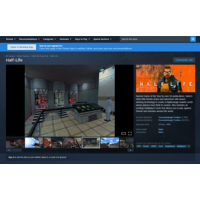
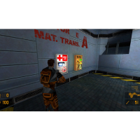
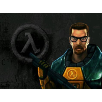

You play Gordon Freeman, a theoretical physicist at the Black Mesa Research Facility. During an experiment in the Anomalous Materials lab, things go catastrophically wrong, causing the Resonance Cascade, which opens portals to an alien world called Xen
As the base is overrun by alien creatures, the U.S. military arrives—not to rescue survivors, but to erase all evidence, including you. Gordon fights through Black Mesa’s collapsing environments, ultimately traveling to Xen to confront the alien leader Nihilanth.
The story unfolds naturally through scripted in-game events. Soldiers use cover, flank, throw grenades, and coordinate—rare for the time. Levels flow into each other, making the facility feel real and lived-in. The game’s engine powered early versions of Counter-Strike, Team Fortress Classic, Day of Defeat, and more. Developer: Valve Engine: Source Genre: First-person shooter, sci-fi Platforms: PC (Windows originally), later Linux, macOS, Xbox, Xbox 360 (via Orange Box), and others.

You join the Resistance, reunite with Alyx Vance, Dr. Kleiner, Eli Vance, Barney Calhoun, and help humanity fight back. The story is known for:
Half-Life 2 introduced advanced physics thanks to the Source Engine. This enabled:

Half-Life 2 is still praised for:
It received near-perfect review scores and numerous “Game of the Year” awards.
  Half-Life